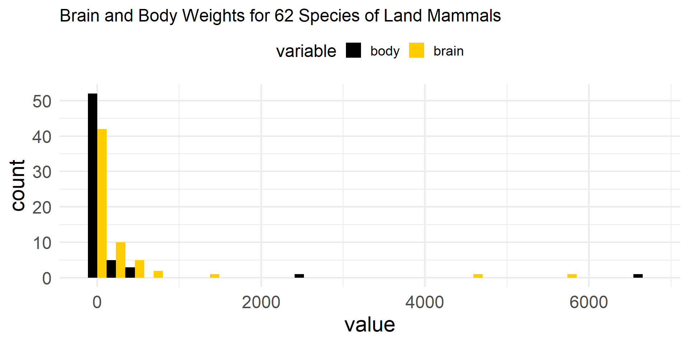
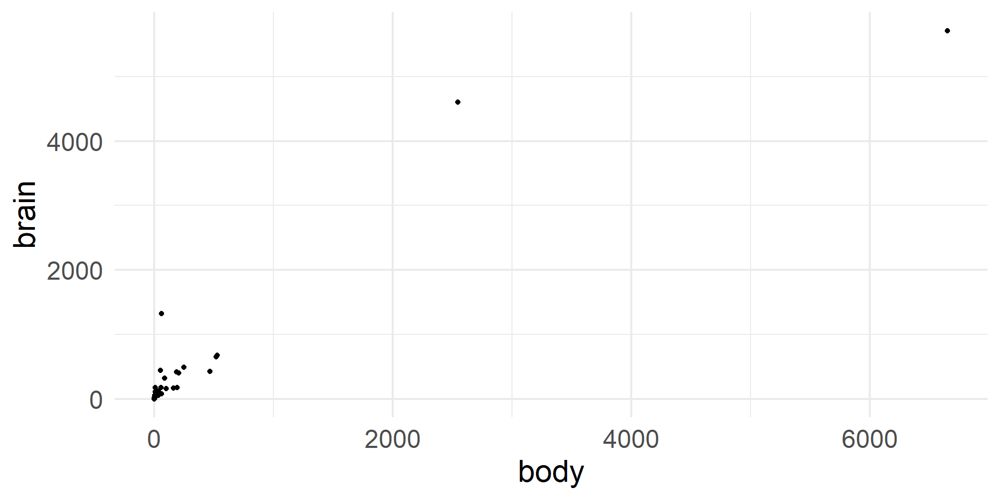
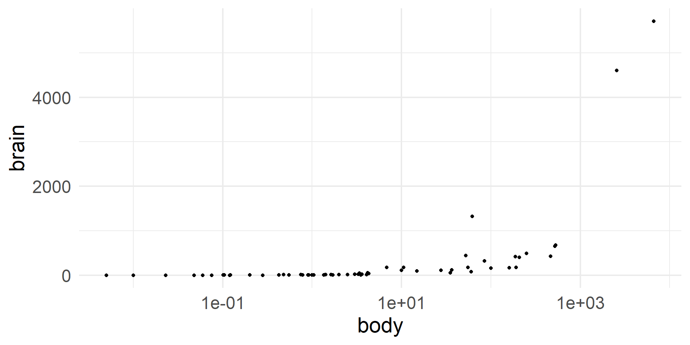
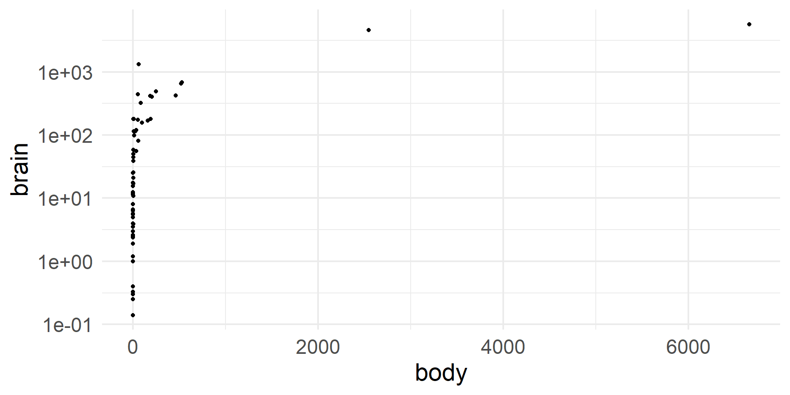
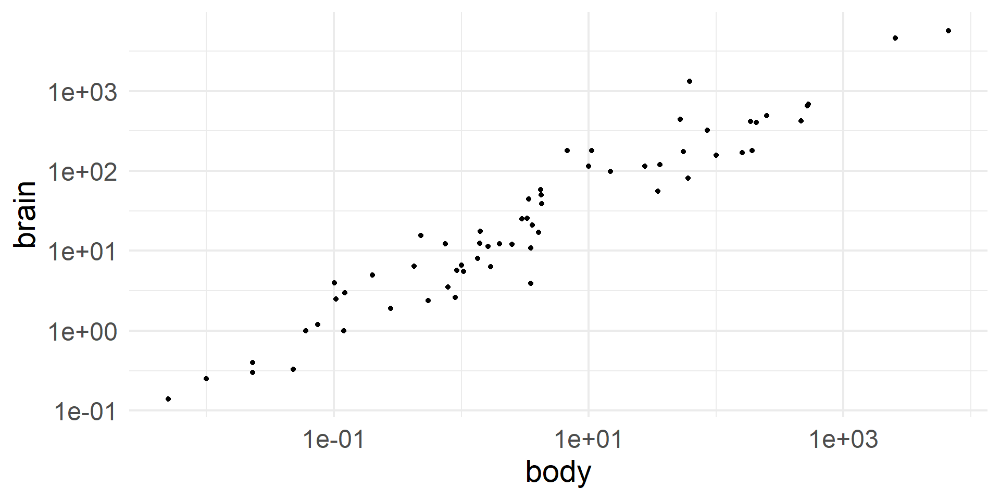
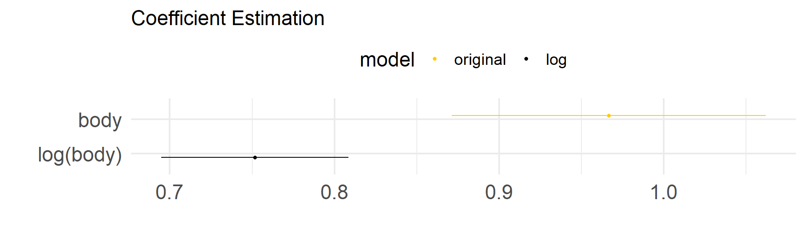
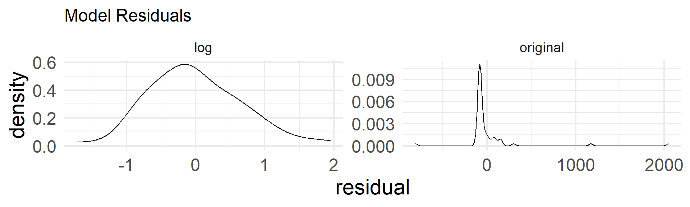
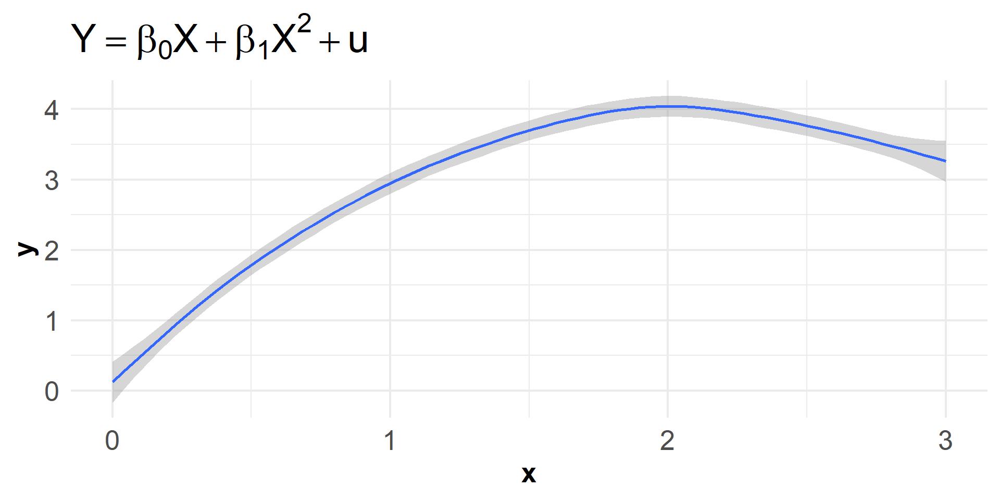
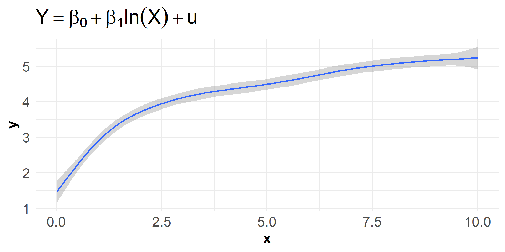
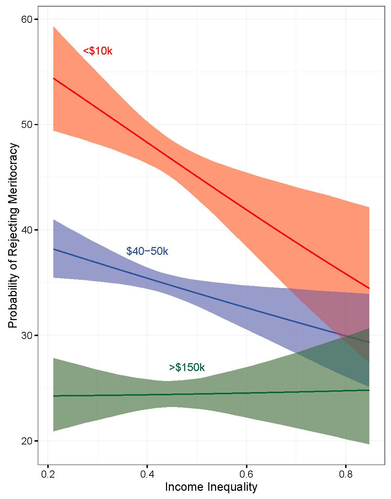

Model Specification
Large N & Leeuwenhoek (70700173)
Yue Hu
Tsinghua University
11/19/22
Overview
How can you get things wrong?
Like…many ways!
Measuring variable wrong
- Proxy variable
- Measurement error
- Variable type
Specifying model wrong
- Functional form
- Omitted variable
Interpreting results wrong
- Nonlinear model
Measurement Problem
Proxy Variable
True model: Y = β0 + β1X1 + β2X2 + β3X3* + u.
However, X3* is unobserved. Instead, we can observe X3* = δ0 + δ1X3 + v.
In other words,
Y = (β0 + β3δ0) + β1X1 + β2X2 + β3δ1X3 + (u + β3v).
Assuming cov(u,v) = 0,
E(u + β3v|X) = 0;
var(u + β3v|X) = β32σv2 + σu2.
Only when
cov(u, X3) = cov(v, X1) = cov(v, X2) = 0,
the model can produce unbiased estimates.
Measurement Error
Random error in Y, Y = Y* + e.
\[\begin{align} &Y^* = \beta_0 + \beta_1X_1 +\cdots+ \beta_kX_k + u\\ &Y = \beta_0 + \beta_1X_1 +\cdots+ \beta_kX_k + (u + e) \end{align}\]
Consequence
- β Unbiased
- var(β) ↑
Random error in X, X = X* + e. If E(eX) = 0, then
\[\begin{align} Y =& \beta_0 + \beta_1(X_1 - e) + u,\\ =& \beta_0 + \beta_1X_1 + (u - \beta_1e). \end{align}\]
\[\begin{align} cov(e, X_1) =& E(eX_1) - E(e)E(X_1) = E(eX_1),\\ =& E[e(X_1^* + e)] = E(eX_1^*) + E(e^2), \\ =& \sigma_e^2\neq0.\\ cov(u - \beta_1e, X_1) =& cov(-\beta_1e, X_1) = -\beta_1cov(e, X_1),\\ =& -\beta_1\sigma_e^2.\\ \Rightarrow\ plim(\hat\beta_1) =& \beta_1 + \frac{cov(u - \beta_1e, X_1)}{var(X_1)},\\ =& \beta_1 + \frac{-\beta_1\sigma_e^2}{\sigma_{X_1}^2} = \beta_1 + \frac{-\beta_1\sigma_e^2}{\sigma_{X_1}^{*2} + \sigma^2_e},\\ =& \frac{\sigma_{X_1}^{*2}}{\sigma_{X_1}^{*2} + \sigma^2_e}\beta_1. \end{align}\]
Unbiased only when var(X1) = var(X1* + e), i.e., σ2X1 = σX1*2+ σe2
Measurement Error
Random error in Y, Y = Y* + e.
\[\begin{align} &Y^* = \beta_0 + \beta_1X_1 +\cdots+ \beta_kX_k + u\\ &Y = \beta_0 + \beta_1X_1 +\cdots+ \beta_kX_k + (u + e) \end{align}\]
Consequence
- β Unbiased
- var(β) ↑
Random error in X, X = X* + e. If E(eX) = 0, then
\[\begin{align} Y =& \beta_0 + \beta_1(X_1 - e) + u,\\ =& \beta_0 + \beta_1X_1 + (u - \beta_1e). \end{align}\]
Consequence
\(|\hat\beta_1| < \beta_1\), a.k.a., attenuation bias.
- β1: underestimated;
- Affecting the estimations of others in unknown ways .
Variable Type Issue
Tip
In OLS, there is no requirement (assumption) for Xs to be linear. (Is there one for Y? Where?)
- Indicator: Binary usually
- \(Y = \beta_0 + \beta_1X_i + u_i,\) where X is either male (0) or female(1)
- β0: E(Y|X = male);
- β1: E(Y|X = female) - E(Y|X = male).
- \(Y = \beta_0 + \beta_1X_i + u_i,\) where X is either male (0) or female(1)
- Nominal:
- Can’t regress unless being broken up into indicator variables.
- e.g., A race variable: white, black, native
- H0: βblack = 0, testing the difference between black and white
- H0: βblack = βnative = 0, testing if the race has any effect.
Log(X)
Have you ever seen social scientists conduct a logarithm transformation on some variables like GDP and income? What’s that for?
Logarithm Transformation: Making X More Linear?




Model Fit with Logarithm Transformation


When Using Logrithm Transformation
Problem: OLS assumption violation (linearity)
Critical criterion: Skewness
Rule of thumb:
- |Skewness| < 0.5, the distribution is approximately symmetric (0 ⇔ perfect symmetric)
- |Skewness| < 1, moderately skewed
- |Skewness| > 1, highly skewed
Example data:
$body
[1] 6.249429
$brain
[1] 4.828829Misspecification
Problem Types
- Functional form
- Omitted variable
Functional Form
Q: When there are two ways to specify the model:
\[\begin{align} Y =& f_1(X_1, X_2, X_3) + u =\beta_1X_1 + \beta_2X_2 + \beta_3X_3 + u \\ Y =& f_2(X_1, X_2, X_3) + u =\beta_4X_1^2 + \beta_5X_2^3 + \beta_6X_3^4 + u \end{align}\]
Which specification is correct?
How to figure out?
Test β1 in Y = f1(X) + f2(X) + u?
Probably not. Hint: How many true models are there?
Let’s assume f1 is the true model:
\[var(\hat\beta_1) = \frac{\sigma^2}{(X_1 - \bar X_1)^2(1 - \rho_{12})}.\]
ρ12: Correlations between X1 and X2, such as between X and X2
When ρ12 ↑……
Better way
Joint test:
H0: β1 = β2 = β3 = 0 or
β4 = β5 = β6 = 0
Statistics: Davidson-Mackinnon test
- Run \(Y = f_2(X) + u\) and calculate the expected value \(\hat Y = E[Y|f_2(X)]\)
- Run \(Y = f_1(X) + \theta\hat Y + u\), and test if θ = 0.
Omitted Variable
\[\begin{align} True: Y_i =& \beta_0 + \beta_1X_{1i} + \beta_2X_{2i} + u_i\\ Specified: Y_i =& \tilde\beta_0 + \tilde\beta_1X_{1i} + \tilde u_i \end{align}\]
How does \(\tilde\beta_1\) compare to \(\beta_1\)?
\[\begin{align} Y_i =& \beta_0 + \beta_1X_{1} + \beta_2X_{2} + u_i,\\ Y_i -\bar Y =& \beta_1(X_{1} - \bar X_1) + \beta_2(X_{2} - \bar X_2) + (u_i - \bar u),\\ (Y_i -\bar Y)(X_1 - \bar X_1) =& \beta_1(X_{1} - \bar X_1)^2 + \beta_2(X_{2} - \bar X_2)(X_1 - \bar X_1)\\ &+ (u_i - \bar u)(X_1 - \bar X_1),\\ \frac{(Y_i -\bar Y)(X_1 - \bar X_1)}{\sum(X_1 - \bar X_1)^2} =& \beta_1\frac{\sum(X_{1} - \bar X_1)^2}{\sum(X_1 - \bar X_1)^2} + \beta_2\frac{\sum(X_{2} - \bar X_2)(X_1 - \bar X_1)}{\sum(X_1 - \bar X_1)^2} + \frac{\sum u_i(X_1 - \bar X_1)}{\sum(X_1 - \bar X_1)^2}.\\ \text{That is, } \tilde\beta_1 =& \beta_1 + \beta_2\hat\delta_1 + \frac{\sum u_i(X_1 - \bar X_1)}{\sum(X_1 - \bar X_1)^2},\\ \Rightarrow E(\tilde\beta_1|X_1) =& E(\beta_1|X_1) + E(\beta_2\hat\delta_1|X_1) + E[\frac{\sum u_i(X_1 - \bar X_1)}{\sum(X_1 - \bar X_1)^2}|X_1],\\ =& \hat\beta_1 + \hat\beta_2E(\hat\delta_1|X_1) + \frac{\sum(X_1 - \bar X_1)}{\sum(X_1 - \bar X_1)^2}E(u_i|X_1),\\ =& \hat\beta_1 + \hat\beta_2\delta_1. \end{align}\]
Biased or Not
\[E(\tilde\beta_1|X_1) = \hat\beta_1 + \hat\beta_2\delta_1,\] in which \(\hat\delta_1\) is the regression coefficient of \(X_2\) on \(X_1\) ( \(X_1 = \delta_0 + \delta_1X_2 + r\)).
- \(\tilde\beta_1\): Biased, unless X2 is an irrelevant variable.
- Even if δ1 = 0, \(X_1 = \delta_0 + r\), the model may increase the risk of Type I error
Misinterpretation
Nonlinear Modeling



Unbiased & efficient linear estimates,
but what does β1 mean?
Marginal Effect
Discrete:
\[Pr(Y|x = X_{n + 1}) - Pr(Y|x = X_n)\]
Continuous:
\[\lim_{\Delta x\to0} \frac{ f(x + \Delta x) - f(x)}{\Delta x}\]
That’s to say, every value in X (n > 1) has a marginal effect (Δx). Which one should we use?
Average Marginal Effect (AME)
- Calculate the marginal effect of each variable x for each observation.
- Calculate the average.
Marginal Effect at the Mean (MEM)
- Calculate the marginal effect of each variable x for each’s mean value.
Marginal Effect at Representative Values (MER)
- Calculate the marginal effect of each variable x for value(s) of interest.

Hypothesis Testing of A Nonlinear Model
\[e.g., Y = \beta_0 + \beta_1X + \beta_2X^2 + u.\]
- Margins: \(\frac{\partial Y}{\partial X} = \beta_1 + 2\beta_2X\)
- Let α = 0.05
- H0: β1 + 2β2X = 0;
- The average acceleration is zero
Statistics:
\[\begin{align} \frac{\beta_1 + 2\beta_2X - 0}{SE(\beta_1 + 2\beta_2X)}\sim& t_{n - 3}.\\ SE(\beta_1 + 2\beta_2X) =& \sqrt{var(\beta_1 + 2\beta_2X)}, \\ =& \sqrt{var(\beta_1) + 4X^2var(\beta_2) + 4Xcov(\hat\beta_1,\hat\beta_2)}. \end{align}\]
Interpretation
Statistics:
\[\begin{align} \frac{\beta_1 + 2\beta_2X - 0}{SE(\beta_1 + 2\beta_2X)}\sim& t_{n - 3}.\\ SE(\beta_1 + 2\beta_2X) =& \sqrt{var(\beta_1 + 2\beta_2X)}, \\ =& \sqrt{var(\beta_1) + 4X^2var(\beta_2) + 4Xcov(\hat\beta_1,\hat\beta_2)}. \end{align}\]
Interpretation dilemma
Can’t simply say whether the null hypothesis is rejected, because it may not be a coherent conclusion in the entire domain of X, due to the nonlinearity.
- Better way: “In the range from a to b, the hypothesis can be rejected.”
- Max - min
- First difference
- Marginal effects across values
- Just plot it. (Do this, cool kids!)